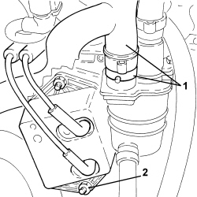
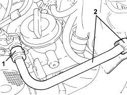
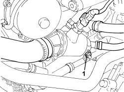

1060G70 VACUUM RESEVOIR - R.R
- Path
- Procedures > 10 ENGINE > 1060 DIESEL INJECTION SYSTEM > 1060G DIESEL INJECTION PRESSURE PUMP ELECTRONIC CONTROL > 1060G70 VACUUM RESEVOIR - R.R
- Kind
- repair procedure (removal / refitting; the operation number is the code)
- Applies to
- engines: 2.4 JTD 20v; all production periods
- Interactive page
- https://sloeber94.github.io/elrnDB-aBrrSpdr/en/#/946003003
Applies to: engines: 2.4 JTD 20v; all production periods
 Removing
Removing
 Refitting
RefittingOp. 1016A10 SOUND-PROOFING COVER - R.R
1. Loosen the band and disconnect the engine oil vapour recovery pipe from the engine oil vapour separator.
2. Undo nuts securing the vacuum tank.

Applies to: engines: 2.4 JTD 20v; all production periods
1. Disconnect the brake servo vacuum pipe rapid connector.
2. Open the clip and move the brake servo vacuum pipe to one side.

Applies to: engines: 2.4 JTD 20v; all production periods
1. Undo the nut securing the duplex pipes to the thermostat.

Applies to: engines: 2.4 JTD 20v; all production periods
1. Undo the nuts securing the duplex pipes to the starter motor and move them away.

Applies to: engines: 2.4 JTD 20v; all production periods
- Disconnect the vacuum pipes from the vacuum tank and remove.
Applies to: engines: 2.4 JTD 20v; all production periods
Refitting
Removing- Place the vacuum tank back in its housing and secure it using the nuts.
- Connect the vacuum pipes to the vacuum tank.
- Connect the pipe to the oil vapour separator and secure it using the band.
- Place the duplex pipes back in their housing and secure them to the starter motor and thermostat with the nuts.
- Connect the rapid connector for the vacuum pump pipe and secure it with the retaining clips.